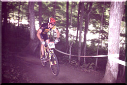

The picture above is me in the 1997 National Championships at Hardwood Hills in Southern Ontario, Canada. I had a good race, finishing 5th place out of close to 100 riders in the Senior Expert class. The course was fast with some technical sections and VERY dusty.
The weekend after the nationals was the 24 Hours of Adrenalin. I was in a 4 man elite team named the Nova Scotia Bluenosers. The members of my team were Terry Tomlin, Ed Rushton, and Rick Warner. We were always within 5 minutes of the eventual winners, the Disciples of Dirt.
For the 1997 season I was sponsored by my shop Slickrock Cycle, Rocky Mountain Bicycles, Powerbar and Oakley. I rode a Rocky Mountain Vertex Team Only. Click here to see the specs and a picture. It was a sweet ride! I also like to road ride—considering 75% of mountainbike training is done on a road bike, I'm glad I do!